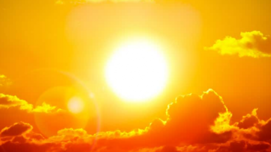

El Sol es el gran protagonista de este sistema, que por eso se llama Sistema Solar. Está situado en el centro y todo gira en tomo a él El Sol es una estrella inmensa que emite luz y calor. Sin el Sol. la vida en la Tierra no existiría.
Los ocho planetas del Sistema Solar
Los planetas del Sistema Solar son ocho cuerpos celestes sólidos de forma casi circular. A diferencia del Sol, no tienen luz propia. Los planetas están siempre moviéndose y girando alrededor del Sol. A este movimiento se le llama movimiento de traslación, y cada uno lo hace en un tiempo diferente. El tiempo que nuestro planeta Tierra tarda en dar la vuelta completa al Sol es lo que llamamos año, es decir, 365 dias. Sí, eso es: cada año que vivimos es una vuelta que da la Tierra alrededor del Sol. Además de esta órbita, la Tierra gira sobre sí misma y tarda exactamente 24 horas. Para nosotros es un día completo. Esto se conoce como movimiento de rotación. Por tanto. mientras la Tierra da una vuelta completa alrededor del Sol (un año) gira sobre sí misma 365 veces (365 días). Por orden. de más cercano a mas lejano del Sol, los planetas son: Mercurio, Venus, Tierra, Marte, Júpiter, Saturno, Urano y Neptuno.